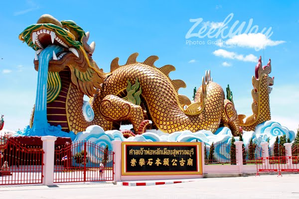
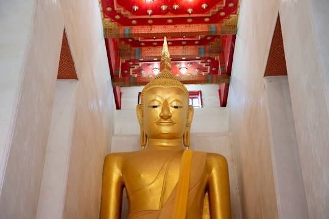
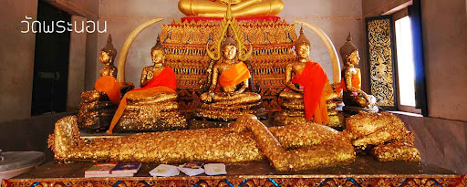

สถานที่ท่องเที่ยวของอำเภอเมือง

พิพิธภัณฑ์ลูกหลานพันธุ์มังกร
พิพิธภัณฑ์ลูกหลานพันธุ์มังกร หรือ อุทยานมังกรสวรรค์ สร้างขึ้นตามความต้องการของ นายบรรหาร ศิลปอาชา
ขณะดำรงตำแหน่งนายกรัฐมนตรี โดยได้เริ่มออกแบบและจัดสร้างพิพิธภัณฑ์ลูกหลานพันธุ์มังกรขึ้นภายในบริเวณ
ศาลเจ้าพ่อหลักเมืองจังหวัดสุพรรณบุรีฝั่งตะวันตกของแม่น้ำสุพรรณบุรี
ห่างจากฝั่งแม่น้ำไปตามถนนมาลัยแมน ตำบลรั้วใหญ่
อำเภอเมืองสุพรรณบุรี
ก่อตั้งขึ้นเพื่อนำเสนอเรื่องราวความเป็นมาของชาวจีนในประเทศไทย
ตลอดจนประวัติศาสตร์และอารยธรรมจีน
เพื่อเป็นอนุสรณ์สัมพันธ์ทางการทูตไทย-จีน ครบ 20 ปีใน พ.ศ. 2539
พิพิธภัณฑ์ลูกหลานพันธุ์มังกรเป็นหนึ่งในสถานที่มหัศจรรย์เมืองไทย
ตำแหน่งที่ตั้ง
วัดป่าเลไลยก์วรวิหาร

วัดป่าเลไลยก์วรวิหาร เป็นวัดเก่าแก่ ตั้งอยู่ที่ถนนมาลัยแมน ตำบลรั้วใหญ่ อำเภอเมืองสุพรรณบุรี จังหวัดสุพรรณบุรี อยู่ทางฝั่งตะวันตกของแม่น้ำสุพรรณบุรีชาวบ้านทั่วไปเรียกว่า วัดป่า ภายในวิหารเป็นที่ประดิษฐานหลวงพ่อโตปางป่าเลไลยก์เดิมหลวงพ่อโตเป็นพระพุทธรูปปางประทานปฐมเทศนา
เช่นเดียวกับพระพุทธรูปศิลาขาว หรือหลวงพ่อประทานพร วัดพระปฐมเจดีย์ ต่อมาได้มีการบูรณะและทำเป็นปางป่าเลไลยก์ ดังที่เป็นอยู่ในปัจจุบัน วัดป่าเลไลยก์วรวิหารเป็นพระอารามหลวงชั้นตรี ระดับวรวิหาร เป็นวัดเก่าแก่หน้าบันของวิหารวัดป่าเลไลยก์มีเครื่องหมายพระมหามกุฎอยู่ระหว่างฉัตรคู่ พระบาทสมเด็จพระจอมเกล้าเจ้าอยู่หัว ได้เสด็จธุดงค์มาพบสมัยยังผนวชอยู่ เมื่อเสด็จขึ้นครองราชย์แล้วจึงทรงมาปฏิสังขรณ์ นอกจากนั้นบริเวณด้านหลังอุโบสถที่ประดิษฐานหลวงพ่อโต ยังมี
ศาลาเล็กๆที่ประดิษฐานหลวงพ่อดำ ที่มีความศักสิทธิ์และเป็นที่เคารพนับถือของประชาชนในพื้นที่อีกด้วย
ตำแหน่งที่ตั้ง
วัดพระนอน

วัดพระนอนแห่งนี้เป็นวัดเก่าแก่สมัยอู่ทองสุพรรณภูมิ และปลูกสร้างขึ้นในสมัยรัตนโกสินทร์ ภายในวัดมีสิ่งน่าสนใจมากมาย เช่น ศาลาการเปรียญที่ตั้งอยู่บริเวณหน้าวัด
ส่วนด้านในจะพบกับ "อุทยานมัจฉา" ซึ่งเป็นโครงการในพระราชดำริของสมเด็จพระเทพฯ ตั้งอยู่บริเวณริมน้ำหน้าวัด มีปลานานาชนิดชุกชุม ทั้งปลาสวาย ปลาตะเพียน ปลาแรด โดยทางวัดประกาศเป็นเขตอภัยทาน ใกล้ ๆ กับอุทยานมัจฉาเป็น "ศาลเจ้าแม่กวนอิม" ซึ่งผู้สนใจสามารถแวะเข้าไปสักการะเจ้าแม่ได้ที่นี่ ถัดมาคือ
"วิหารพระนอน" เป็นวิหารทรงจตุรมุข
โดยมุขด้านหน้ามีหลังคาต่อเติมออกมาเพื่ออำนวยความสะดวกให้กับพุทธศาสนิกชนที่เดินทางมาไหว้พระตำแหน่งที่ตั้ง